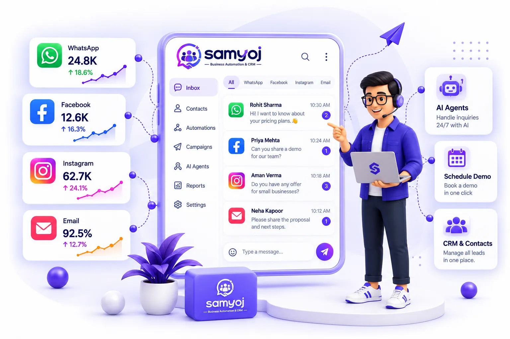

5 Signs Your Business Has Outgrown WhatsApp Web (And What to Upgrade To)
WhatsApp Web works beautifully — until three people, one number and forty unread chats collide. Here are the five failure points every growing business hits, why they happen, and what a shared team inbox built on the official API actually changes.

1. WhatsApp Web Hits a Ceiling the Moment a Second Person Needs the Same Chats
For a founder and one assistant, WhatsApp Business on a phone plus WhatsApp Web on a laptop is honestly fine. One person is accountable, chat history lives in one head, and labels do the job of memory. The trouble starts quietly when volume grows or a second teammate needs the same number.
WhatsApp Web is a mirror of one person’s account, not a workplace tool. It has no assignment, no visibility of who replied to what, no shared memory of a customer beyond what’s typed in the chat, and it logs out whenever the linked phone goes offline. None of this is a bug. It was simply never designed to be a team’s front desk.
2. The Five Signs, One by One
Sign 1: Two teammates replied to the same customer — differently
Duplicate replies are the first and most embarrassing symptom. On WhatsApp Web both of you see the same chat, so both of you answer it. One quotes ₹5,000; the other has already promised ₹4,500 in a different chat. A shared inbox makes assignment explicit: every conversation gets one owner, and the rest of the team sees who.
Sign 2: You're re-typing the same answers twenty times a day
“Store timings?”, “Do you deliver to Indore?”, “kya price hai?” — when the same answers live in people’s heads, every reply costs typing time and occasionally someone’s patience. Canned replies and an approved template library keep the answers consistent, in your voice, insertable in two clicks.
Sign 3: Chats get lost in the scroll — and customers notice
“Sorry, we missed your message” is expensive: the customer often doesn’t come back, they just buy elsewhere. Search in WhatsApp Web degrades fast past a few hundred chats. A shared inbox with labels and search lets you pull up every conversation for one order number, one city, one product — instantly.
Sign 4: You can't hand over when you're asleep, on leave, or at a wedding
On a personal account, leave means either answering messages from the mehndi or losing the lead. A team inbox with assignment and business-hours/away-message settings hands the number to the team: away messages cover off-hours, and any teammate can pick up any thread with full history visible.
Sign 5: Nobody knows how many enquiries you actually got this week
When the boss asks “how many leads did WhatsApp get us?”, the honest answer on WhatsApp Web is a shrug. With the API platform behind it, you get real reporting: sent, delivered and read counts, message volume trends, and AI-usage reports — along with a contacts database where every customer has tags, notes and attributes.
3. What Actually Changes with a Shared Team Inbox
Moving to Samyoj’s shared inbox on the official WhatsApp Business API doesn’t change what your customers see — they still message your business number as always. What changes is everything behind the glass:
Everyone, one number, realtime
The whole team works the same number in one realtime inbox. Assignments, internal notes and labels mean customers feel like they’re talking to one very organised business — because they are.
Hours, away messages, welcome
Business hours, away messages and welcome messages are set once and stay polite forever — no more “seen at 11:47 pm, replied at 9 am” apologies.
Templates after the window, free-form within it
Reply free-form inside the 24-hour customer service window; outside it, approved templates keep the conversation alive. The window is enforced in the product, so you can’t accidentally break Meta’s rules.
Numbers you can act on
Delivery and read counts, volume trends, and your Meta quality rating in one dashboard — so growth conversations run on data instead of vibes.
4. Moving Over Without Losing Your Number or Your History
The fear that stops most businesses: “will I lose my number, my chats, my green tick?”. The migration path is deliberately gentle:
Connect with Facebook login
Sign in with Facebook, pick your business number, and Samyoj provisions it on the official WhatsApp Business Cloud API. You keep the same number customers already have saved.
Your number stays yours — and stays isolated
Each connected number is a separate workspace with its own history and settings. If you ever disconnect, it’s a soft disconnect: the number and chat history are retained, nothing is lost.
Invite the team, set roles
Add teammates with departments, roles and permissions, and turn on two-factor authentication for members. Agency folks can run multiple client numbers as separate workspaces without cross-contamination.
Set the automation that guards the off-hours
Welcome message, away message, keyword replies — ten minutes of setup that keeps the inbox human even when the humans are away. Then connect Instagram and Messenger when you’re ready; the same inbox takes them in stride.
Give your team one inbox instead of one phone
Move your number to Samyoj’s shared team inbox in an afternoon. Start free, or book a walkthrough with our team.
Start for FREE
5. Frequently Asked Questions (FAQ)
Can multiple users use one WhatsApp Business number at the same time?
Not on WhatsApp Web — the web client mirrors a single phone and fights break out over who replies. On the official WhatsApp Business Cloud API, a platform like Samyoj lets your whole team work the same number simultaneously, with chat assignment, roles and internal notes keeping the work organised.
Will I lose my existing WhatsApp number or chat history if I move to the API?
You keep your number — connecting to Samyoj registers the same business number on the official Cloud API. Chat history from the phone app isn’t imported into the platform, so teams typically keep the app as an archive during a transition. If you ever disconnect, it’s a soft disconnect: your number and workspace history are retained.
What is the difference between WhatsApp Web and a shared inbox?
WhatsApp Web is a single-user mirror of one person’s WhatsApp account. A shared inbox is a team tool built on the official API: multiple teammates, one number, chat ownership, canned replies, labels, search, business hours, away messages and reporting. The customer experience stays the same; the teamwork behind it is completely different.
Can my team handle Instagram DMs and Messenger in the same inbox too?
Yes. Samyoj brings Instagram DMs, Facebook Messenger and WhatsApp into one shared inbox, each as its own tab with its own 24-hour-window handling. Comments on Instagram posts can be moderated (hidden/unhidden) and answered with one private reply per comment, so public and private conversations get managed side by side.
I run an agency with many client numbers — does this fit me?
Each client number connects as its own isolated workspace, with separate teams, roles, templates and reporting. That separation is what makes agency use clean: no cross-client message risk, per-client permissions, and per-client dashboards you can walk a client through in a review call.
Give your team one inbox instead of one phone
Move your number to Samyoj’s shared team inbox on the official WhatsApp Business Cloud API - the number and history stay yours, the teamwork goes up a level. Current plans and inclusions are always on the pricing page.